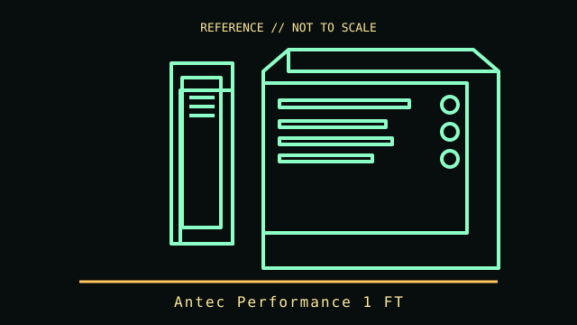

[ TOWER AND LEGACY DESKTOP CASES // IDENTIFIED ENCLOSURE ]
Antec Performance 1 FT
2023 full-tower chassis. A model-specific enclosure record with physical fit limits, revision notes and manufacturer references.

IDENTIFICATION: Confirm the chassis label, model suffix, revision and regional bundle. Manufacturer maximum clearances are conditional on fan, radiator, drive-cage and cable configurations; allow room for connectors and service access.
Recorded specifications
| Cataloged model | Antec Performance 1 FT |
|---|---|
| Era / class | 2023 full-tower chassis |
| Dimensions and component limits | E-ATX up to 285 mm wide, ATX, microATX and ITX boards; 522 × 230 × 522 mm (H × W × D). Maximum GPU length 400 mm and CPU-cooler height 175 mm. Supports up to a 420 mm front radiator; listed bundle has three 140 mm front fans and one 120 mm rear fan. |
| Revision / variant identification | Performance 1 FT includes a front temperature display and dual tempered-glass side panels. Model is distinct from Performance 1 FT White only by finish/accessory SKU. |
Compatibility and fit notes
With the HDD cage installed, PSU length allowance is shorter (about 245 mm); removing the cage changes drive capacity. E-ATX boards over 285 mm wide may not fit. Radiator/fan stack and drive cage positions should be checked against the exact build.
- Measure the exact GPU, CPU cooler, PSU, radiator and fan stack; nominal maximums may not be simultaneously usable.
- Check motherboard standoff locations, front-panel connectors, PSU cable routing, drive cages and expansion-slot alignment before assembly.
- Consult the applicable manual for screw locations, removable brackets, included hardware and fan/ARGB pinouts; do not force panels or boards into place.
Model-specific notes
Performance 1 FT includes a front temperature display and dual tempered-glass side panels. Model is distinct from Performance 1 FT White only by finish/accessory SKU.
Sources & further reading
- Antec — Performance 1 FTManufacturer product specifications for the black Performance 1 FT.
- Antec — Performance 1 FT WhiteManufacturer documentation for the same chassis family; confirm black SKU-specific accessories.
Specifications describe the identified model family; validate the exact part number, revision and regional package against the manufacturer's manual before purchase or installation.